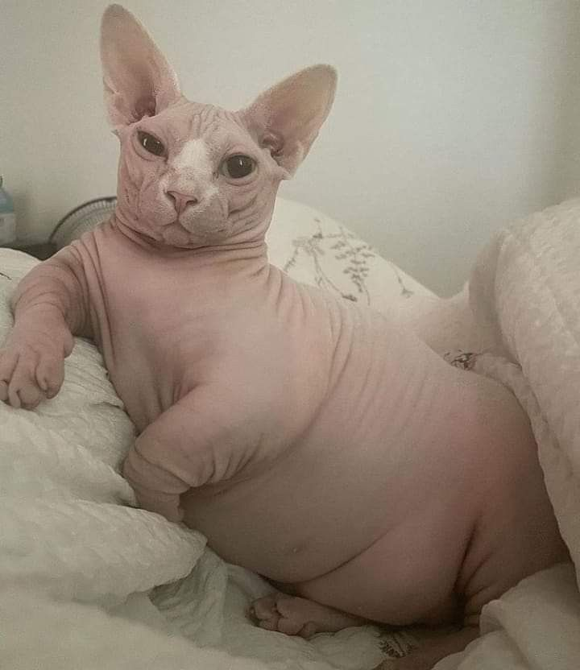

Aunque su apariencia es poco común. Son así por una mutación genética que surgió por una alteración que afecta la producción de queratina, que es la proteína que le da estructura al pelo de cualquier gato
A pesar de que la mayoría piense que es del antiguo Egipto, en realidad esta raza nació en Canadá. En 1966 en la ciudad de Toronto, cuando una gata común y corriente tuvo una camada y uno de sus gatitos, llamado Prune, nació completamente pelado. A sus cuidadores les llamó la atención que empezaron a cruzarlo con otros gatos que aparecieron con la misma condición en Norteamérica y Europa hasta formar la raza que conocemos hoy
Cuando los ves a simple vista parecen totalmente calvos, pero si te acercas o los tocas vas a sentir que tienen una capa muy finita de pelo muy corto. Además, suelen tener un poco más de pelo en la nariz, atrás de las orejas, en las patitas y en la punta de la cola
Esa misma genética que les saca el pelo del cuerpo también les afecta a sus bigotes. La mayoría directamente no tiene, y a los pocos que les crecen les salen muy cortitos, rizados o se les quiebran fácil
Al no tener pelo que los proteja, pierden calor muy rápido, por eso siempre buscan lugares calentitos. Además, como no tienen pelo para que absorba la grasa normal de la piel, necesitan que los bañen seguido o los limpien con toallitas para que no se les acumule aceite